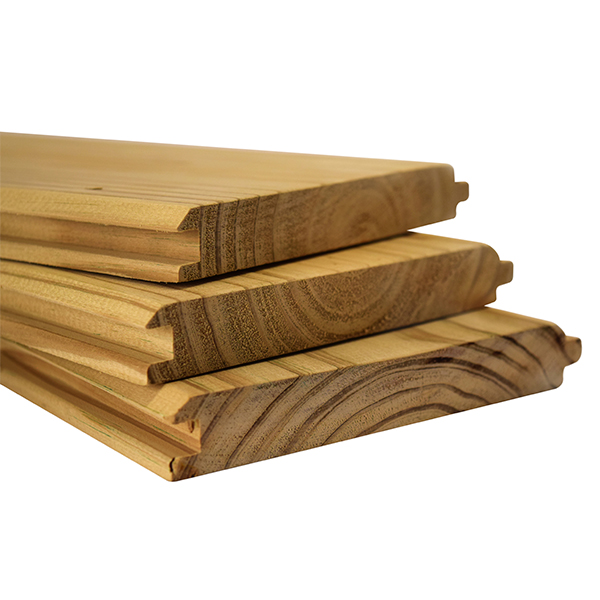
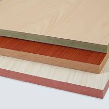
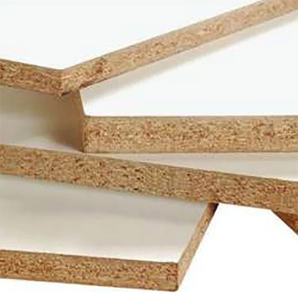
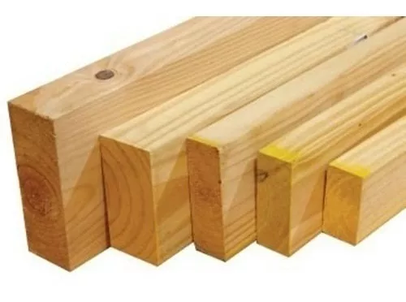

Machimbres
Tablas de madera machihembradas, ideales para revestimientos y pisos, brindan un acabado rústico y cálido.
Placas Mdf con melamina
Tableros de MDF recubiertos con melamina, perfectos para muebles y decoración, resistentes y con variedad de colores y texturas.
Herrajes

Accesorios y componentes metálicos para ensamblar y reforzar muebles, garantizando durabilidad y estabilidad.
Placas Aglomeradas con Melamina
Paneles de aglomerado recubiertos con melamina, económicos y versátiles para la fabricación de muebles y estanterías.
Tirantes para Techos
Maderas robustas y resistentes, ideales para estructuras de techos y soportes, aportando firmeza y estabilidad.